DSAN 6600: Multimodal Deep Learning and Graph Neural Networks
2026-11-19
Today
Multimodal : what CLIP is for, and the three ways to combine two kinds of inputDocument AI : pulling fields out of forms, receipts, and invoicesGraph neural networks : models for data where items are connected to each other
Last content meeting. Two weeks from today is presentations. The multimodal half is the practical one. The graph half is here so that when you meet relational data you recognize it, not so you can implement a GNN from memory.
What multimodal means
A multimodal model takes more than one kind of input, such as an image and some text, and handles them together.
Adding a second encoder is easy. The hard part is getting two different kinds of representation into a form where they can be compared or combined, and that is what the first half of today is about.
CLIP similarity on six COCO photos
Each column is one COCO photo, scored against all 6 human-written captions. The photo’s own caption scores highest in 6 of the 6 columns , and CLIP was never trained on COCO.
The numbers are cosine similarities between the image vector and the caption vector. The correct pairing is brightest in every row. Over 200 images in pools of 50, the right caption is top-1 92% of the time. Nothing was fine-tuned, and nothing about COCO was in the training objective.
What CLIP embeddings are used for
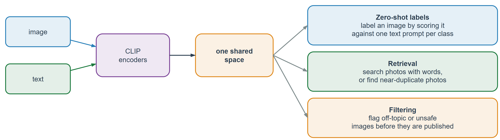
CLIP was trained once, by OpenAI, on 400 million image and caption pairs. You can use its two encoders as they are for all three jobs, without training anything yourself. Each image and each piece of text is embedded once and stored. Every job is then a dot product between stored vectors.
This is the same retrieval setup as Week 10, with images added. You embed every image and caption in a catalogue once and store the vectors. A later query needs only one new embedding and a dot product against the stored vectors. Zero-shot classification gets the most attention, but search and finding near-duplicate images use the same stored vectors and are common in real systems.
Zero-shot, in detail
Write one sentence per class, embed those sentences once, then compare an image against all of them. The classifier is the list of prompts, so changing the label set costs nothing and needs no retraining. The wording matters more than people expect: “a photo of a dog” usually beats “dog”.
Three ways to combine two modalities
Early : embed both, concatenate, one transformer reads the mixtureLate : encode each separately, compare the two vectors at the endCross-attention : let one modality attend to the other, in the middle
Every multimodal model you meet uses one of these three, and knowing which one tells you what it can and cannot do. Late fusion cannot reason about a specific region of the image, because by the time the two sides meet, the image is one vector. CLIP is late fusion.
Vision-language models in research and production
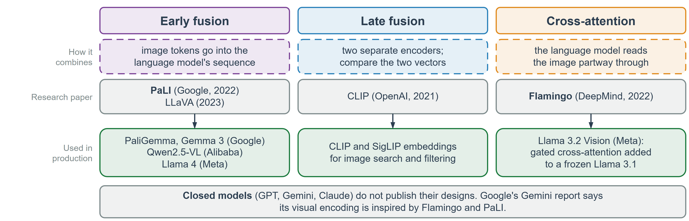
Flamingo and PaLI are 2022 research models, and neither was released for public use. We cover them because production models use their designs.
Most people meet vision-language models as products: ChatGPT, Gemini, or Claude reading a screenshot, or an open model like Llama, Gemma, or Qwen running on their own hardware. The closed models do not publish their designs, so we cannot place them in a column for certain. The open ones do, and each uses one of the three designs from the previous slide. Most open models now put image tokens straight into the language model’s sequence, the way LLaVA did in 2023. Meta’s Llama 3.2 Vision uses Flamingo’s design instead: it adds gated cross-attention layers to a frozen Llama 3.1, so the text-only model’s abilities stay intact. Google’s PaliGemma is the open successor to PaLI, a small model meant to be fine-tuned for one task. CLIP-style models are still used on their own for search and filtering, and a CLIP or SigLIP image encoder is the image half inside many of the models in the other two columns.
Early fusion
Both modalities become tokens in one sequence, and a single transformer reads them together.
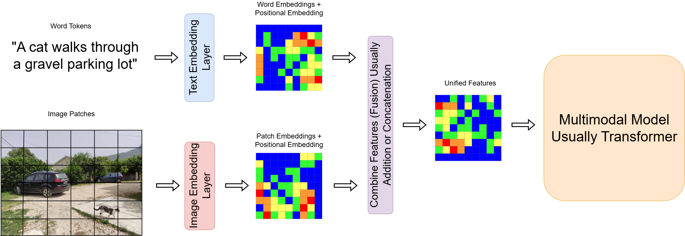
The model can relate a word to a specific patch from the first layer onward, which is what you need when the position of the text on the page is part of the meaning. The cost is that you have to train the whole thing jointly, and both modalities must be present at inference.
Document AI
LayoutLMv3 reads the words, where they sit on the page, and the pixels, all at once.
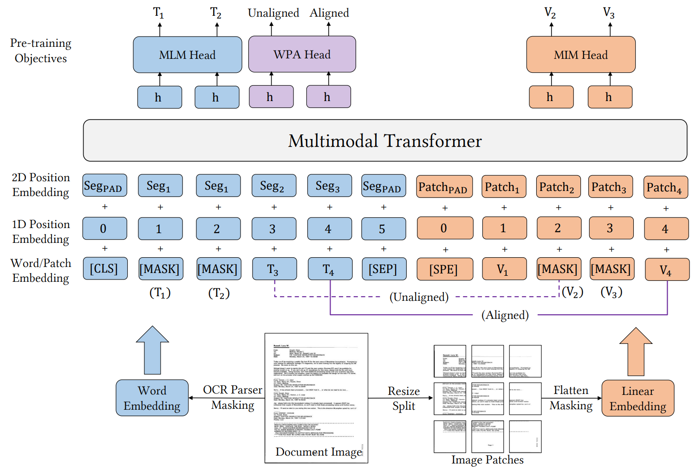
Every business has decades of invoices, forms, and scanned contracts, and someone is paying a vendor per page to pull fields out of them. This is the clearest case for early fusion: on a form, the fact that a number sits in the box labeled “Total” is the entire signal, and a model that flattens the page to text loses it. Specialists like this still beat general vision-language models on tables and structured layouts.
Cross-attention
Cross-attention keeps the two encoders separate and lets one of them read the other’s output partway through.
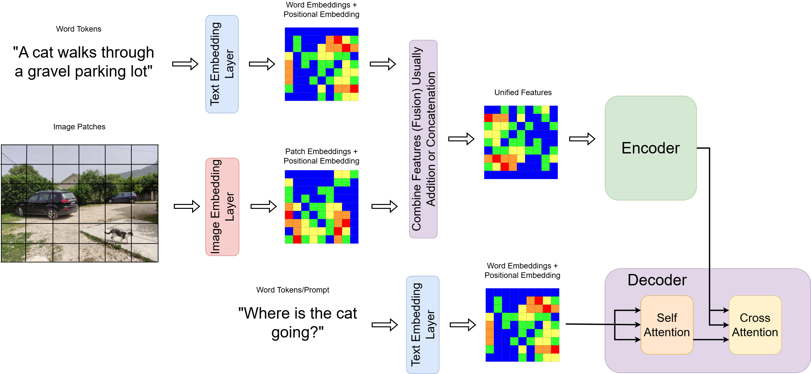
Same mechanism as the prompt entering the denoiser last week, and the same as the decoder reading the encoder in Week 9. It keeps appearing because it is the standard way to let one sequence use information from another.
Flamingo: freeze the language model
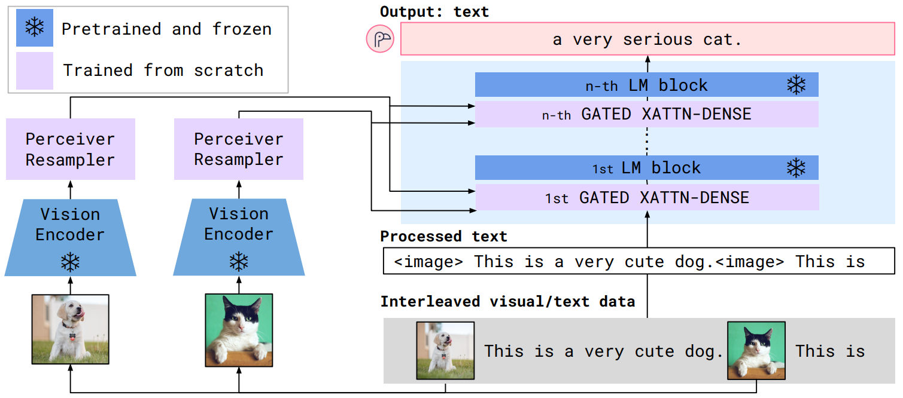
Flamingo (DeepMind, 2022) adds new cross-attention layers to a frozen language model, and Meta’s Llama 3.2 Vision uses the same design. The parts marked with a snowflake are frozen. Only the purple parts are trained: the new cross-attention layers, and a Perceiver Resampler that turns each image into a fixed number of tokens.
You already have a good language model and you do not want to damage it or pay to retrain it. So freeze it, and insert small gated cross-attention layers between its blocks that let it look at images. LoRA follows the same idea. Meta did this for Llama 3.2 Vision so that it could replace the text-only Llama 3.1 without losing anything on text tasks.
Flamingo’s gated cross-attention layer
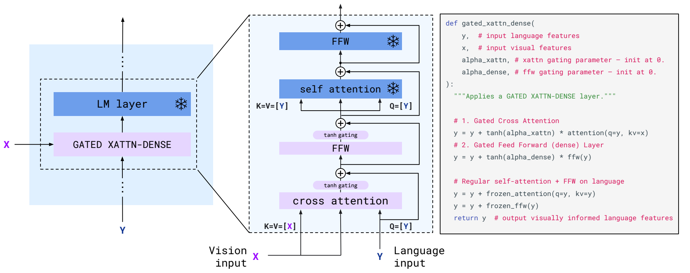
Each new layer’s output is multiplied by a gate , \(\tanh(\alpha)\) , before it is added back into the language model. \(\alpha\) is one learned number per layer, and it starts at 0.
Left: one new layer sits in front of each frozen language-model block. Middle: inside it there is a cross-attention layer, with queries from the text and keys and values from the image, followed by a feed-forward layer. Each one’s output goes through a tanh gate and is added to the text stream. The frozen self-attention and feed-forward layers of the original block come after. Right: the same thing as code. The two alpha parameters are the gates, one for the cross-attention and one for the feed-forward layer.
Zero-initialized gates
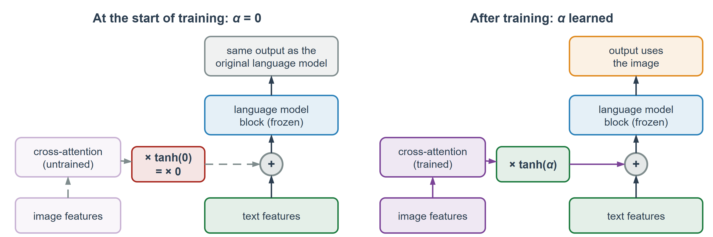
Because \(\tanh(0) = 0\) , the new layers start as a no-op : they add nothing. Without the gate, the untrained layers would add random noise into every block of a language model that already works. Training then moves each \(\alpha\) away from 0, letting in as much of the image as helps. Llama 3.2 Vision uses the same zero-initialized gates.
Think about what happens without the gate. The new cross-attention layers start with random weights, so on the first training step they would add random vectors into the text stream before every frozen block. The language model has never seen inputs like that, so its output would be nonsense, and because it is frozen it cannot adapt. The new layers would first have to learn to stop doing damage. With the gate at zero, training starts from a model that already writes fluent text, and the only question is how much of the image to let in. The Flamingo paper reports that this made training more stable and the final model better. The tanh keeps each gate between minus one and one, so a gate can never scale a new layer’s output up without limit.
The same idea shows up whenever a new part is added to a trained network. LoRA starts one of its two small matrices at zero, so the adapted model starts identical to the original. ControlNet, which adds controls such as edge maps to Stable Diffusion, connects its new branch through convolutions whose weights start at zero. In Hugging Face’s code for Llama 3.2 Vision, the two gates are called cross_attn_attn_gate and cross_attn_mlp_gate, and both are initialized to zero.
PaLI: every task written as text
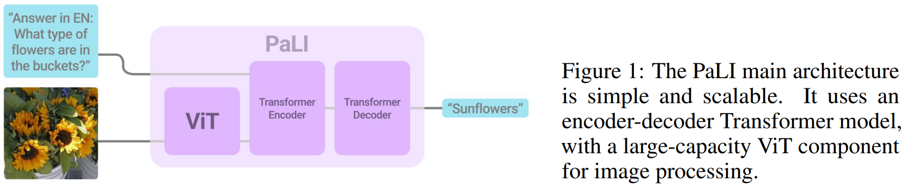
PaLI (Google, 2022) feeds image tokens and a text prompt into one encoder-decoder, and the prompt says which task to do. Its open successor, PaliGemma, is the version you would download and fine-tune.
PaLI is a ViT feeding one encoder-decoder, and the task is given in the prompt instead of being built into the architecture. Captioning, visual question answering, and classification all become “read this image and this instruction, then write the answer”. Most open vision-language models now work the same way: a vision encoder whose output tokens go into a language model, with the task written in the prompt. PaliGemma takes a short task prefix such as “caption en” or “detect cat”, and it is meant to be fine-tuned on your own task rather than used as a chatbot.
Choosing a multimodal model
The common mistake in 2026 is reaching for a general vision-language model because it is easy to call, when the task is narrow and repeated. If you are processing the same form a million times, a specialist is cheaper, faster, and evaluable. The VLM is for open questions and one-off analysis.
Images as graphs
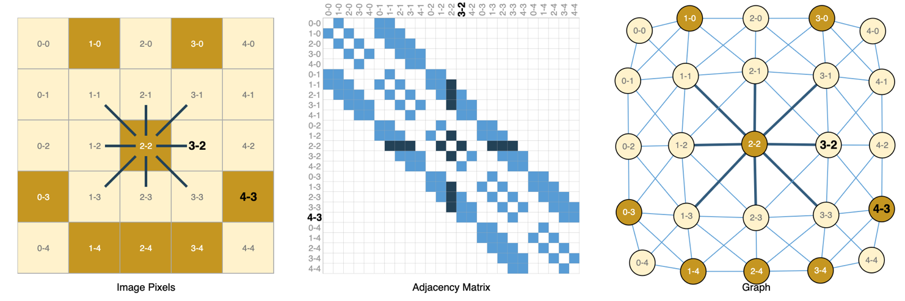
An image is a graph where every pixel is joined to its neighbors.
A convolution is a graph operation on a very regular graph. Every pixel has the same number of neighbors in the same relative positions, which is exactly why a fixed square kernel works. Take that regularity away and you need something that can handle a different number of neighbors per node, which is what a graph neural network does.
Four friends
A graph is people, the friendships between them, and a value on each person.
\[X = \begin{bmatrix} 1 \\ 1 \\ 0 \\ 0 \end{bmatrix}
\qquad
A = \begin{bmatrix}
0 & 1 & 0 & 0 \\
1 & 0 & 1 & 0 \\
0 & 1 & 0 & 1 \\
0 & 0 & 1 & 0
\end{bmatrix}\]
Row \(i\) of \(A\) marks who person \(i\) is friends with.
Alice and Bob like sci-fi, Carol and Dave do not, and the only friendship across the divide is Bob and Carol. Friends mostly agree here, and that is the assumption a graph network leans on: that your neighbors tell you something about you. When neighbors tend to disagree, averaging them points the wrong way, which is one reason a real layer keeps a separate weight for your own value. Notice also that Alice has one friend and Bob has two. The number of neighbors varies from person to person, which a fixed square convolution kernel cannot handle.
Node order and permutation invariance
A graph layer has to give each person the same result whatever order the list is in. This is called permutation invariance , and an average has it.
Nothing about the four friends changed between the two panels. Only the order we happened to list them in changed, and X and A both changed with it. A graph pulled from a database comes out in whatever order the rows were stored, so a model that depends on the order is learning an accident of storage. An ordinary dense network would treat the two panels as two different inputs and could give Alice two different predictions. An average of a person and their friends does not care what order the friends arrive in, which is why the next slide uses one. Strictly, a layer that returns one value per person is called permutation equivariant, meaning its outputs get reordered along with its inputs; invariant is the word for a single answer about the whole graph. Most people say invariant for both.
One layer
Each person replaces their value with the average of their own value and their friends’ values.
Read it as a layer of a neural network whose connections are not all-to-all. An arrow only exists where there is a friendship, plus one straight down for your own value. That is the entire difference from a dense layer, and it is the same idea as a convolution only looking at nearby pixels. Bob’s new value is the average of three numbers because he has two friends; Dave’s is the average of two because he has one. The average works for any number of neighbors, and it gives the same answer whatever order they arrive in.
Stacking graph layers
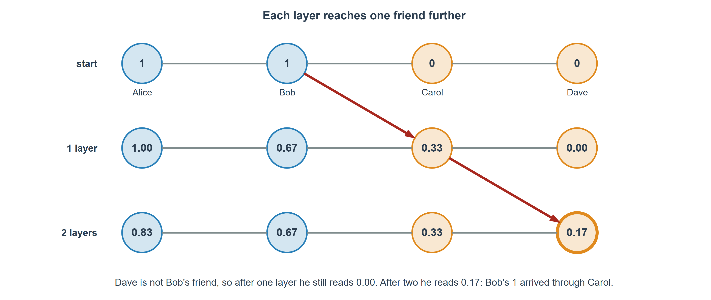
Two layers see friends of friends. Most graph networks stop at two or three.
How far information travels is set by the number of layers, not the number of training epochs.
Dave is not Bob’s friend, so one layer cannot carry Bob’s value to him: after one layer Dave still reads zero. The second layer reads Carol’s updated value, which already contained Bob’s, so Bob arrives at Dave in two hops. That is the same receptive-field argument as stacking convolutions. The reason to stop early is visible if you keep going: every layer averages again, and after enough of them every person converges toward the same number and the differences that made the graph useful are gone. That failure is called over-smoothing, and it is why graph networks are shallow.
Layers and epochs get confused here. An epoch is one pass of training over the data. Every forward pass, in every epoch, runs the same two or three layers, so how far a message can travel is fixed by the architecture. Training for more epochs makes the weights better at using what those layers bring in; it does not bring in anything from further away.
A graph layer with learned weights
\[h_v' = \sigma\Big( W_{\text{self}}\, h_v \;+\;
W_{\text{friends}} \cdot \operatorname{mean}_{u \in N(v)} h_u \Big)\]
The toy rule split the average evenly between you and your friends. A real layer learns that split instead, and learns it per feature: W self says how much to trust your own value, W friends says how much to trust theirs, and sigma is the usual nonlinearity. The same two weight matrices are used at every person, so a graph with a million people has exactly as many parameters as one with four, the same way a convolution kernel is shared across an image. Lab 12 writes this layer with a sum over friends instead of a mean, X W1 plus A X W2. Dividing by the number of friends is the only difference, and it stops a person with hundreds of friends from swamping the layer.
Self-loops and the degree matrix
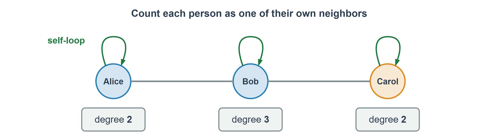
\[\tilde A = A + I = \begin{bmatrix} 1 & 1 & 0 \\ 1 & 1 & 1 \\ 0 & 1 & 1 \end{bmatrix}
\qquad
\tilde D = \begin{bmatrix} 2 & 0 & 0 \\ 0 & 3 & 0 \\ 0 & 0 & 2 \end{bmatrix}\]
The degree matrix \(\tilde D\) holds each person’s number of connections on its diagonal. Dividing by it turns a sum over friends into an average, so Bob does not get bigger numbers just for having more friends.
This is the standard GCN layer written with matrices, on three of the four friends. Dave is dropped only to keep the matrices small. A self-loop is an edge from a person to themselves. Adding the identity matrix to A puts a one on the diagonal, so multiplying by A tilde includes each person’s own value along with their friends’. That is the “your own value plus your friends’” part of our toy layer. A person’s degree is how many connections they have, counting the self-loop: Alice 2, Bob 3, Carol 2. Without the division, an account with ten thousand followers would produce enormous numbers. D tilde inverse times A tilde divides each row by that person’s degree, which is exactly the average our toy layer took. GCN uses a symmetric version of the same division, on the next slide.
A GCN layer is two matrix multiplications
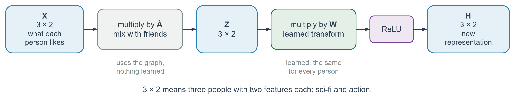
\[H = \operatorname{ReLU}\big(\hat A\, X\, W\big)
\qquad
\hat A = \tilde D^{-1/2}\, \tilde A\, \tilde D^{-1/2}\]
\(\hat A\) is \(\tilde A\) with each connection divided by the square root of both people’s degrees. The graph fixes it; only \(W\) is learned.
This is the layer from Kipf and Welling’s 2017 paper, the one most libraries call GCNConv. The first multiplication, A hat times X, mixes each person’s features with their friends’. It has nothing to learn, because A hat is fixed by who is connected to whom. The second multiplication, times W, is the learned part, and the same W is used for every person, like a convolution kernel. Why the square roots instead of dividing each row by its degree? Dividing by the square root of both people’s degrees keeps A hat symmetric, and it turns down messages from very popular nodes. The numbers come out close to a plain average either way.
GCN differs from the layer two slides back in one way: there is no separate weight for your own value. The self-loop puts you into the same weighted average as your friends, and one W is used for everyone. Lab 12’s layer, X W1 plus A X W2, keeps the separate weight and skips the division by degree.
A GCN layer, with numbers
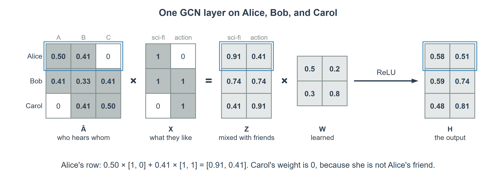
Alice does not like action, but Bob does, so her action score goes from 0 to 0.41. A second layer repeats both steps on the output: \(H^{(2)} = \operatorname{ReLU}\big(\hat A\, H\, W^{(2)}\big)\) .
X has one row per person and two columns, sci-fi and action. Alice likes sci-fi only, Bob likes both, and Carol likes action only. Read Z one row at a time: each row is a weighted mix of that person’s row of X and their friends’ rows, with the weights taken from A hat. Bob is in the middle and mixes all three people, so he ends up even on both features. W is made up for the example; in a real network it is learned by gradient descent like any other weight matrix. ReLU changes nothing here, because every entry of Z W is already positive. The second layer runs the same two steps on H with a new weight matrix, and that is how Carol’s features reach Alice, two hops away.
One-way and two-way edges
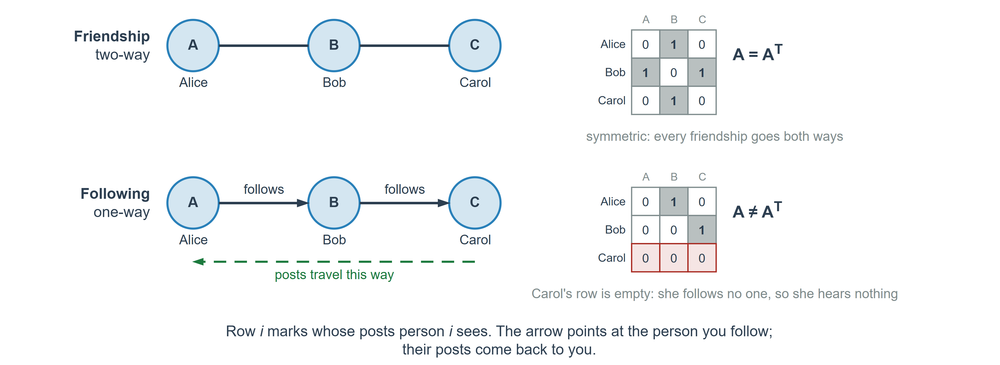
An undirected edge goes both ways, like a friendship. A directed edge goes one way, like a follow.
So far every edge has been a friendship, which goes both ways: if Alice is Bob’s friend, Bob is Alice’s friend. That makes A symmetric, equal to its own transpose, and messages travel both ways along every edge. A follow is different. Alice following Bob does not mean Bob follows Alice, so A is no longer symmetric. We use the convention that row i marks whose posts person i sees, so multiplying A by X gives each person what the people they follow posted. Here is the effect. Suppose Carol posts a trailer. After one layer, Bob has it, because he follows Carol. After two layers, Alice has it, through Bob. Carol follows no one, so her row of A is empty and nothing ever reaches her, however many layers you stack. Libraries pick a convention too: in PyTorch Geometric, an edge from Alice to Bob sends Alice’s message to Bob, the opposite of what we drew. Check which way yours goes before you trust a result.
Modeling edge direction
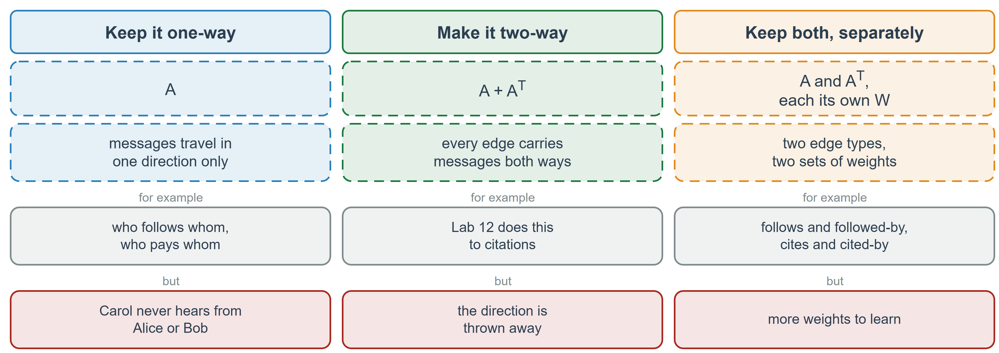
The third option is called a relational GCN (R-GCN): every edge type gets its own weight matrix.
Direction is a choice you make when you build A, not something the data decides for you. Keep it one-way when direction carries meaning and you want information to flow only that way, like money moving from payer to payee in a fraud graph. Make it two-way with A plus A transpose when you care that two things are connected more than who pointed at whom. If both directions were already there, that entry becomes a 2; set it back to 1. Lab 12 does this to the citation graph: a paper and the papers it cites are probably on the same topic, whichever one did the citing. Keep both directions as separate edge types when direction matters but you still want information to flow both ways. Following someone and being followed by them then get different weights. A knowledge graph takes the same idea further, with a separate weight for every relation: works at, lives in, is the CEO of.
Bidirectional here is not the same idea as a bidirectional LSTM. A BiLSTM reads a sequence forward and then backward in time. In a graph it only means messages are allowed to cross an edge in both directions.
Molecules as graphs
A molecule is a graph with a type on every atom and every bond.
Same structure as the four friends, with richer values. Each atom is a node with a one-hot type, each bond is an edge with a type of its own, and the adjacency matrix records which atoms are bonded. Predicting toxicity from the atom counts alone cannot work, because the arrangement is the chemistry. Chemistry, such as drug discovery, is one of the main places graph networks are used.
Node, edge, and graph prediction
All three run the same graph layers. What changes is what you predict: one node, a pair of nodes, or the whole graph.
Every graph network runs the same layers first, and each node ends up with a vector. What changes is where the question mark sits, and that decides the last step, the data you need, and how you split it.
Node-level. One big graph where only some nodes are labeled, such as a payment network where a few accounts are confirmed fraud. Put a small classifier on each node’s final vector and train on the labeled nodes only. The unlabeled nodes still send messages, which is why a handful of labels goes a long way. Ant Financial published this setup for flagging malicious Alipay accounts in 2018, and Lab 12 does the same thing on Cora: 140 labeled papers out of 2,708.
Edge-level. One big graph, and the question is whether an edge should exist. Score a pair by the dot product of their two vectors, passed through a sigmoid to get a probability. Train with the edges you know as positives and random pairs as negatives. Recommendation is the big use: Pinterest’s PinSage picks which pins to show from a graph of billions of pins and boards, and Uber Eats used the same idea to suggest dishes. Friend suggestions and predicting which pairs of drugs cause side effects are the same task.
Graph-level. Many small graphs with one label each; the next slide shows the last step. In 2020 an MIT team trained a graph network on molecules labeled by whether they stopped E. coli from growing, used it to screen thousands of existing drug compounds, and found halicin, a new antibiotic.
The split is where node- and edge-level go wrong. In node-level work the test nodes stay in the graph and keep sending messages; only their labels are hidden. That is the standard setup, but the test nodes were not truly unseen, so the score can be optimistic for brand-new accounts that arrive later. In edge-level work, remove the test edges from the graph before training. If they stay in, the model receives the answer as a message, the score is inflated, and nothing in the code looks broken. Graph-level is the easy case: hold out whole graphs, like rows of a table.
Pooling for graph-level prediction
Pooling combines every node’s vector into one vector for the whole graph. Averaging is the most common way. A molecule works the same way: average the atom vectors, then predict toxic or not.
Every layer so far ends with one vector per node. A graph-level question, like whether this friend group picks sci-fi for movie night or whether this molecule is toxic, needs one answer for the whole graph, and graphs come in different sizes. Averaging the node vectors gives a vector of the same length whether the graph has three nodes or three thousand, so an ordinary classifier can sit on top and train on the graph’s label as usual. It is the same move as the global average pooling at the end of a CNN. An average also ignores order, so the graph-level answer is properly invariant to how the nodes were listed. Sum and max are the other two common choices. A sum keeps track of size, which matters when the count of something is the signal, and a max asks whether any node has a feature at all, like a single toxic group anywhere in a molecule. In PyTorch Geometric each one is a single function call, such as global_mean_pool. Fancier versions cluster the graph first and pool within each cluster; Prof. Hickman’s GNN theory notes, linked at the end, work through one.
Wrap-up
CLIP puts images and captions in one space, for search and filtering as well as labelsEarly fusion, late fusion, and cross-attention are the three ways to combine modalitiesDocument AI reads text, layout, and pixels together to pull fields out of formsFor a narrow task you repeat, a specialist model usually works better than a general VLM
A layer added to a trained network should start as a no-op , like Flamingo’s gates
Use a graph model when a node’s neighbors help predict its label
A graph layer averages each person with their friends , so node order does not matter
GCN does it with two matrix multiplications, \(\operatorname{ReLU}(\hat A X W)\) Each layer reaches one friend further , and most graph networks stop at two or threeDirected edges can stay one-way, become two-way (\(A + A^\top\) ), or get their own weightsPooling averages the node vectors when you need one answer for the whole graphSplit graph data carefully : for edge prediction, remove the test edges before training
That is the course. Two weeks from today you present. Everything from Week 5 onward is fair game for the project, and the best projects this term have been the ones that picked a small real problem rather than a large famous dataset.
Supplemental content
Optional. Prof. Hickman’s centralized lecture content :
Also optional: Radford et al., CLIP (2021); Huang et al., LayoutLMv3 (2022); Sanchez-Lengeling et al., A Gentle Introduction to Graph Neural Networks (Distill, 2021).
Lab 12, Quiz 12, and the project
Lab 12 is CLIP and a small graph network. You run zero-shot classification and retrieval over a set of images, then train a node classifier on a citation graph and compare it against the same model with the edges removed. Due Wednesday, December 2, the day before presentations. Graded for completion.
Quiz 12 is now, and it is the last one. Scope is last week: GANs, diffusion, CLIP, and Lab 11. Today’s material is not quizzed.
Presentations are Thursday, December 3. Five minutes per group. The final repository is due December 1.